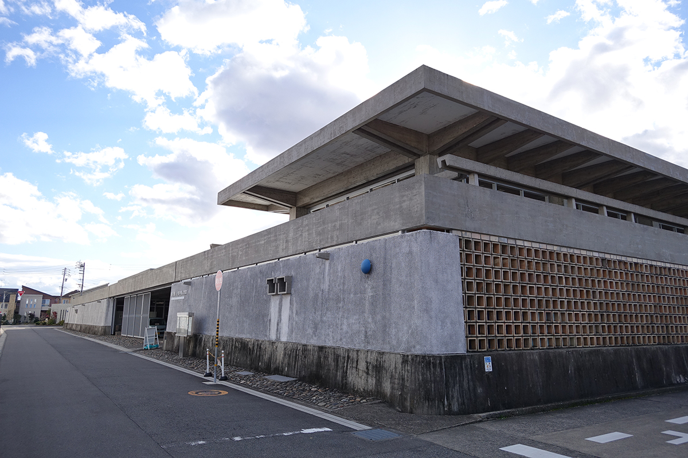
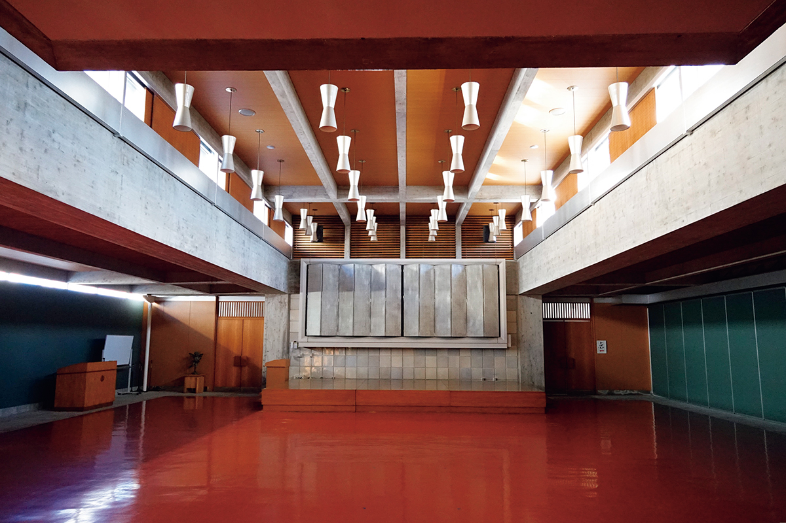
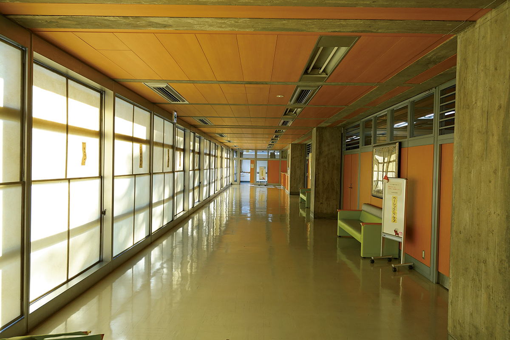
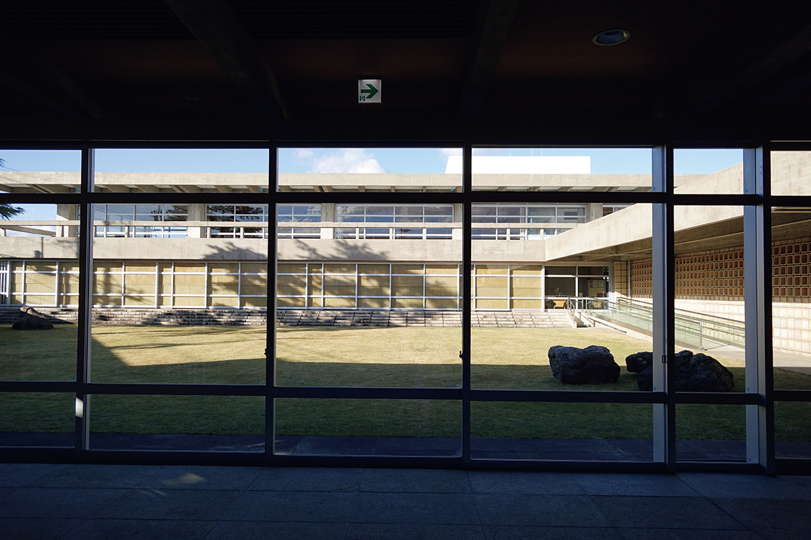

Префектура Айти · Итиномия · архитектура
Суми-кайкан в Итиномии: ранний Кэндзо Тангэ, ставший общественным центром

В старых кварталах Итиномии стоит строгое бетонное здание, которое построил Кэндзо Тангэ в первые послевоенные годы. Его заказала местная фирма, а сохранили жители, и сегодня в нём работает районный общественный центр.
Архитектор
Контора от Кэндзо Тангэ
Итиномия, город на севере префектуры Айти, долго жил шерстяными тканями, и в 1950-е годы вокруг старых кварталов стояло множество фабрик. В 1957 году здесь достроили штаб-квартиру местной текстильной компании «Цуякин Когё». Проект сделал Кэндзо Тангэ (1913–2005), архитектор, чьё имя вошло в мировую историю архитектуры, и для него это была одна из ранних послевоенных работ. Здание называется Суми-кайкан, а с 2014 года в нём работает общественный центр района Конобу-Накадзима.
Участок достался неудобный: трапеция с острым углом. Тангэ не стал с ним бороться, а сделал форму участка основой всего замысла. Стена идёт точно по его границе, а внутри пространство поделено на три части. В почти прямоугольной части стоит офисный корпус, в остром углу корпус с залом собраний, а между ними оказались вход на колоннах-пилоти и внутренний двор.
Вокруг тогда шумели ткацкие станки, поэтому здание со всех сторон закрыто высокой стеной. Только с северной стороны, где стояли жилые дома, стену сделали из терракотовых блоков со сквозными отверстиями.

Внутри всё разложено по назначению. Главное помещение корпуса собраний, зал, получило высокий потолок и широкий шаг колонн, чтобы в нём свободно помещалось много людей. В остальных комнатах потолки ниже, но и там почти нет глухих перегородок: архитектор старался не ограничивать то, чем в здании будут заниматься.
Бетон
Порядок без украшений
Железобетон оставлен без отделки. На поверхности отпечаталась текстура досок из японского кедра, в которые заливали бетон, а линии стыков опалубки подчёркивают пропорции здания. Конструкция сама задаёт пространство, и без единого украшения здесь чувствуется строгий порядок и собранность.
Много продумано и со светом. В зале под потолком устроены высокие окна, рассеянный свет расходится по всему помещению и меняется в течение дня. Стеклянные стены, выходящие во двор, пропускают свет и одновременно впускают внутрь вид на ухоженный сад.

Новая жизнь
От офиса к общественному центру
Компания сменила род занятий, и в 2010 году здание перешло городу Итиномия. После ремонта, в том числе сейсмического усиления, оно открылось снова в 2014 году. При переделке в общественный центр держались одного правила: уважать исходный облик и менять как можно меньше. Контору пришлось разделить на небольшие комнаты, но перегородки сделали по образцу старых, со стеклом в верхней части, чтобы сохранить задуманную архитектором непрерывность пространства.

Суми-кайкан не просто функциональная коробка и не упражнение в отказе от декора. Самое сильное в нём то, как архитектор придал смысл незастроенным частям участка, двору и пилоти, разделив и связав внутреннее и внешнее.
Здание заказала местная фирма, а сберегло желание жителей. По качеству оно стоит рядом с главными работами Тангэ: зданием администрации префектуры Кагава (1958), Национальным спортивным комплексом Ёёги и токийским собором Святой Марии (оба 1964). Это место, где можно пройти по следам архитектора мирового уровня.
В фойе центра выставлены стенды об устройстве здания и его ремонте, реплики столов и стульев по рисунку Тангэ и модель конструкции. По правилам на сайте центра (2026 год), без гида можно осмотреть первый этаж офисного корпуса и корпус с залом с 10:00 до 12:00 и с 13:00 до 16:00, группой не больше пяти человек, не заходя в занятые комнаты. Второй этаж ради сохранности памятника показывают только с гидами из волонтёрской группы, назначенной городом.
Суми-кайкан, общественный центр Конобу-Накадзима
- Адрес
- префектура Айти, Итиномия, Конобу-Накадзима, Минами-Кутан, 11-1
- Телефон
- +81 586-62-5150
- Часы работы
- 9:00–21:00
- Выходные
- с 28 декабря по 4 января
- Цены / Вход
- платно только пользование корпусом с залом собраний. Второй этаж только с экскурсией волонтёров-гидов в первую субботу месяца, бесплатно
- Сайт
- sumikaikan.jp